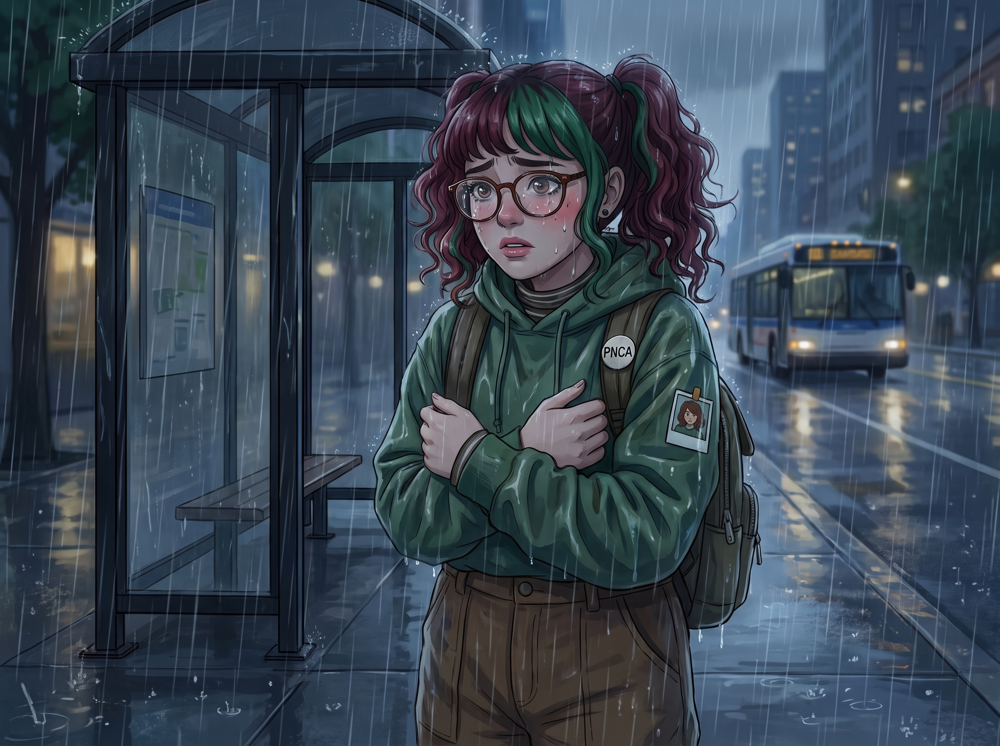

雨夜的秘密（倒敘）

在 Lily 來到二號車廂實習的前兩個禮拜，她一直覺得這四個人的組合是一個「隨時會引發第三次世界大戰的社會學實驗」。
一個滿嘴粗話的暴躁技師、一個眼高於頂的刻薄千金、一個安靜到彷彿不存在的社恐攝影師，還有一個溫柔到不真實的腹黑天使。她們的背景、性格和階級完全水火不容。
直到十月的某個週五傍晚，一場突如其來的太平洋雷陣雨，向這位膽小的實習生揭開了這個庇護所最深層的秘密。
一、遺落的速寫本與雨夜的窺探
那天傍晚，Lily 已經下班走到了公車站，卻發現自己把最重要的速寫本落在了工坊的工作台上。她只能冒著漸漸變大的雨，折返回二號車廂。
當她輕手輕腳地推開沉重的鐵門，正準備為了自己的冒失道歉時，她愣住了。
車廂裡的燈光調得很暗，只有幾盞暖黃色的露營燈。沒有重金屬樂，也沒有 Victoria 挑剔的說教聲。空氣裡瀰漫著肉桂、機油與底片顯影劑混合的奇妙味道。
Lily 站在玄關的陰影處，眼前的景象讓她大氣都不敢喘。
二、卸下偽裝的靈魂
在客廳那張昂貴的波斯地毯上，那個平時總是拿著電鋸和大扳手、看起來能一拳打碎玻璃的 Chloe Price，此刻正盤腿坐在地上。她手裡拿著一根極細的鐘錶匠鑷子，屏住呼吸，正極其小心地幫 Max 修理一台卡彈的老式拍立得。她的動作輕柔得彷彿在對待一隻受傷的蝴蝶。
而那個平時總是戴著耳機、拒人於千里之外的社恐攝影師 Max，此刻正毫無防備地靠在 Chloe 的背上。Max 閉著眼睛，下巴輕輕擱在藍髮女孩的肩膀上，一隻手無意識地把玩著 Chloe 脖子上的子彈項鍊。兩人之間沒有說一句話，但那種連呼吸都完全同步的默契，讓 Lily 覺得任何聲音都會是一種褻瀆。
另一邊的中島吧台，則是另一番景象。
高高在上、總是嫌棄一切的 Victoria，正穿著她那件標價四位數美金的真絲睡袍，手裡拿著一條溫熱的濕毛巾，一臉不耐煩卻動作極其輕柔地，幫剛從溫室搶救植物回來的 Kate 擦拭沾滿泥巴的手指。
「妳這隻沒有常識的草食動物，就算那幾盆破草死了，我也能給妳買一萬盆新的。妳要是感冒了，誰來給我泡那種該死的、溫度精準的紅茶？」Victoria 嘴裡依然吐著毒液。
Kate 沒有反駁，只是溫柔地笑著，反手輕輕握住了 Victoria 戴著百萬鑽戒、卻因為幫忙搬花盆而擦傷的手背：「知道了，謝謝妳，Victoria。」
Victoria 觸電般地想抽回手，但猶豫了半秒，最終還是任由 Kate 握著，只是欲蓋彌彰地把臉扭向了一邊，耳根紅得像要滴血。
三、刻在骨子裡的創傷防禦機制
就在這時，窗外突然閃過一道極其刺眼的閃電。一秒鐘後，「轟隆——！！」一聲彷彿要撕裂天空的巨大雷鳴，在車廂頂上炸響，整個鐵皮車廂都跟著劇烈震動了一下。
Lily 嚇得發出一聲短促的尖叫，本能地蹲下身捂住耳朵。
但當她抬起頭時，她看到了讓她永生難忘的一幕。
那四個人沒有尖叫，沒有慌亂。在這聲足以讓普通人嚇破膽的雷聲響起的零點一秒內，她們展現出了一種令人心碎的、如同軍隊般的肌肉記憶。
手裡還拿著鑷子的 Chloe 瞬間扔掉了工具，轉身一把將 Max 撲倒在地毯上，用自己龐大的身軀將 Max 死死護在身下，雙手緊緊捂住 Max 的耳朵。
而吧台那邊，原本還在傲嬌的 Victoria 甚至連想都沒想，猛地伸出雙臂，將嬌小的 Kate 狠狠拽進自己懷裡，兩個人迅速蹲到堅固的大理石中島台下方。
整個過程不到一秒鐘。沒有任何人發號施令，沒有任何言語交流。她們的動作快得像是一種條件反射。
雷聲滾滾遠去，雨聲重新佔據了聽覺。
車廂裡死一般的寂靜。
「Max……沒事了，只是打雷，沒有龍捲風。」Chloe 趴在 Max 身上，聲音微微發抖，卻拼命放輕語氣安撫著懷裡的人。
Max 從 Chloe 懷裡抬起頭，臉色蒼白，但她第一時間伸出手，緊緊抱住了 Chloe 的脖子，反覆呢喃：「我知道……我還在，妳也還在。」
吧台下，Victoria 死死抱著 Kate，名媛的指甲因為過度用力而陷入了 Kate 的毛衣裡。Kate 則是輕輕拍著 Victoria 的後背，像哄小孩一樣柔聲說：「我們都在一個安全的盒子裡，Victoria，沒有人會掉下去，沒有人會離開。」
四、實習生的覺醒
躲在玄關陰影裡的 Lily，眼淚突然不受控制地流了下來。
她終於明白了。
難怪 Chloe 總是把音樂開得那麼大聲，因為她害怕過於安靜的空氣會引發某些可怕的回憶；難怪 Victoria 對每一件事都要求極致的控制權，因為她曾經在某個時刻，經歷過徹底失去控制的無力感；難怪 Max 總是那麼安靜地觀察著周圍的一切，因為她的大腦永遠在警惕著下一場災難的降臨；也難怪 Kate 永遠那麼溫柔，因為她是這個破碎家庭的黏合劑。
她們不是什麼奇怪的富二代和不良少女的組合。
她們是一群從某場不為人知的毀滅性戰爭中，死裡逃生的倖存者。她們身上的那些帶刺的性格，全都是為了保護彼此而生長出來的堅硬鱗片。
Lily 擦乾眼淚，沒有發出任何聲音，也沒有去拿速寫本。她輕輕地推開門，重新退回了雨夜中，將那個專屬於倖存者的庇護所留給了她們。
隔天早上，當 Lily 再次走進工坊時，Chloe 依然因為找不到扳手而大聲爆粗口，Victoria 也依然對著咖啡的溫度冷嘲熱諷。
但這一次，膽小的實習生沒有發抖，也沒有退縮。
她抱著速寫本，走到 Chloe 面前遞上扳手，然後轉身給 Victoria 倒了一杯溫度剛好 82 度的燕麥奶拿鐵。在兩人錯愕的目光中，Lily 露出了一個無比燦爛且堅定的微笑：
「早安，Chloe 學姐、Victoria 學姐。今天我也會努力工作的。」
因為她知道，這兩頭看似凶猛的野獸，其實有著這個世界上最柔軟、最忠誠的靈魂。
故事的時間點，實際發生在第二季波特蘭工坊時期